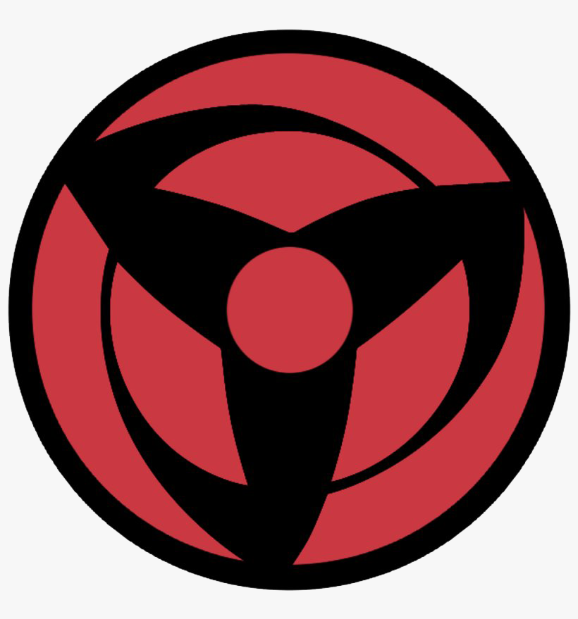

A Mangekyō Sharingan is distinguished from a normal Sharingan by its appearance, which changes the form of the tomoe seal. While the exact design differs for each user, they all resemble pinwheels. It is initially awakened by the trauma suffered from witnessing the death of someone close to the user. Uchiha have historically misunderstood this criteria as the user needing to be responsible for the person's death, and for that reason they developed the practice of killing their closest friends in order to gain the Mangekyō Sharingan. Obito's Mangekyō activated immediately after his trauma, whereas, in Naruto Jinraiden, Sasuke's Mangekyō didn't activate until several weeks afterwards.
The Mangekyō Sharingan retains all of the Sharingan's generic abilities. In addition to that, the Mangekyō grants powerful abilities that differ between each eye, though abilities may be similar in nature; both Sasuke and Itachi have access to Amaterasu's flames, though the extent to which they can use them differ. The abilities of a Mangekyō Sharingan may not even be the same for both of a single user's eyes, as Itachi has Amaterasu in one eye and Tsukuyomi in another. As each eye houses the particular dōjutsu techniques, one can only access them if they currently house the said eye, even if they were the originator of the said technique. Once a user awakens the Mangekyō in both eyes, they are able to perform Susanoo, even without either eye. In addition to the unique techniques, the straight tomoe (直巴, choku tomoe) of Madara's and Sasuke's Mangekyō Sharingan grants them greater fluidity in their movements when fighting. Madara was able to sense this form and later deduced that he and Sasuke must be connected by more than blood.
